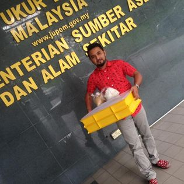
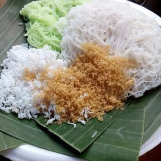
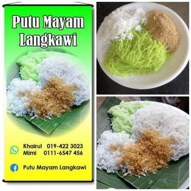
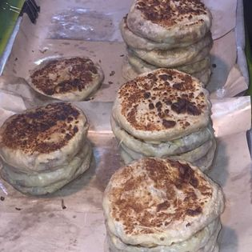
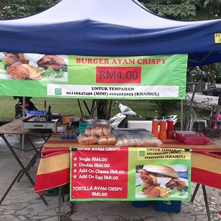

BACK TO HOMEPAGE
NIGHT MARKET WORKER
So, we moved to another part which is about my experience working as a night market worker. As I have explained about my eldest brothers, he was working at the night market. He has their own business like selling the "putu mayam" and "murtabak langkawi". The main point that I want to share with you is about my experience during the semester break session. Every semester break, I will go to live at my brother's house which is at Gombak, Kuala Lumpur. And then, I also follow him to sell the putu mayam and murtabak. It fell so hard and tired actually. All the sellers at night market were struggling to gain the profit back. Even though, I have the chance to feel the situation for a few weeks, it is very tired and struggle to get the money actually. And then, my brothers also give me some money cause give the help to him. What I can highlight here is about the struggle of us to gain the money a day to days. We need to throw up the give up attitude and be able to be the diligent person.





OFFICIAL ACCOUNT FOR HIS BUSINESS
Murtabak & Putu Mayam